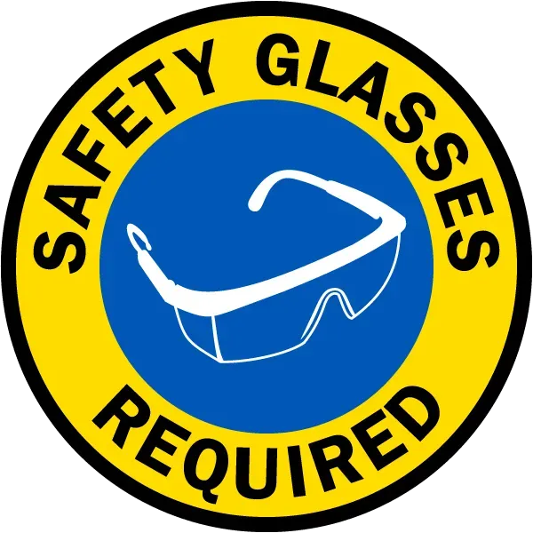
Lab ActivityThrough-Hole Soldering & Multimeter Skills
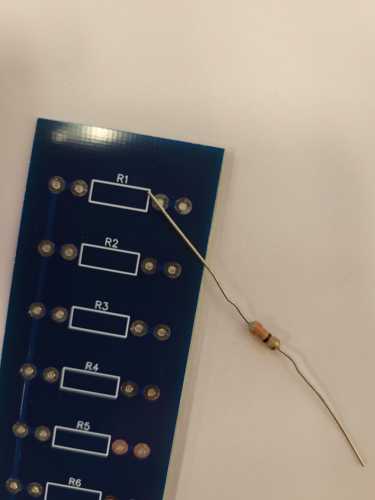
Today's project: Resistor Check PCB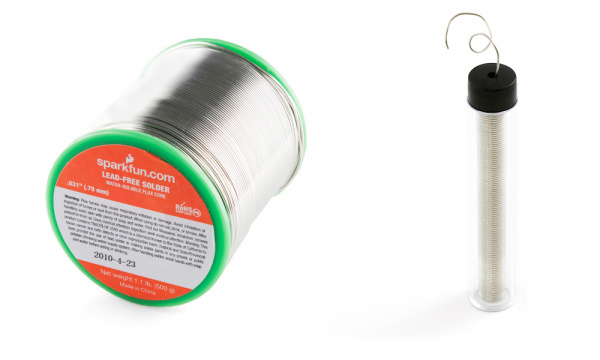
Spool (left) & tube (right) — leaded and lead-free varieties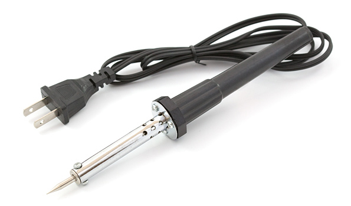
Simple wand — no base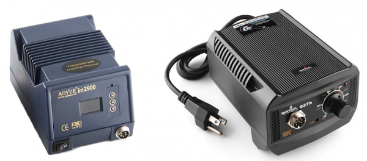
Digital station (left) & analog station (right)// All irons have the same key parts: tip, wand, and some form of heat source. The station just adds control.
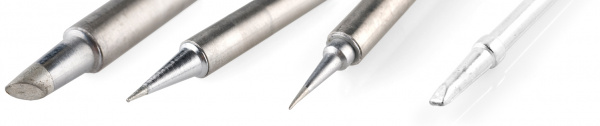
Common tip shapes — chisel, conical, bevel, fine point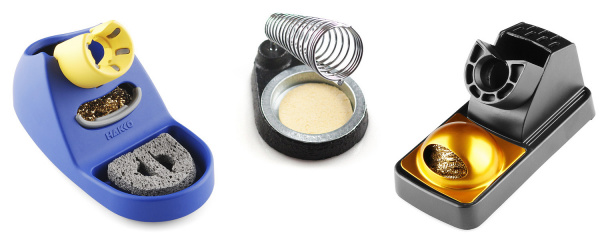
Stand types — sponge cradle, coil stand, brass wool stand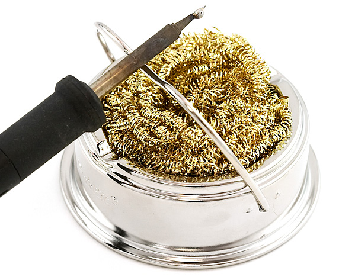
Brass sponge in use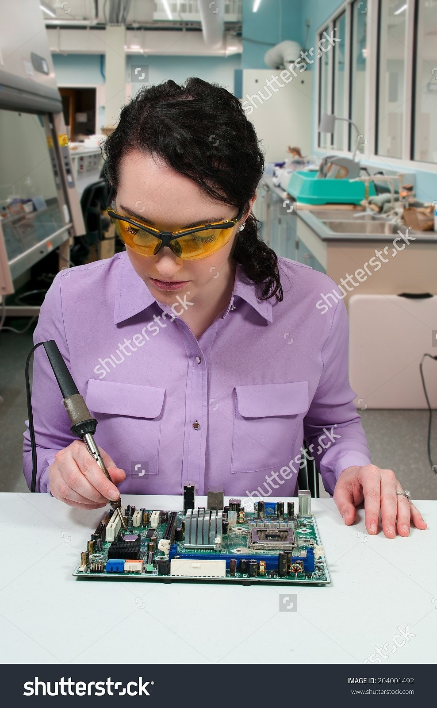
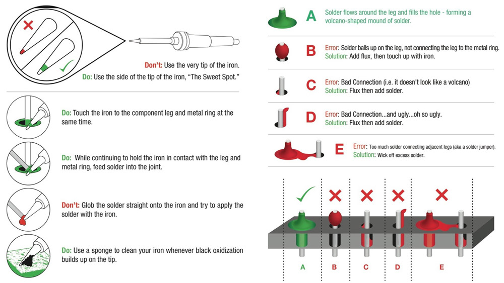
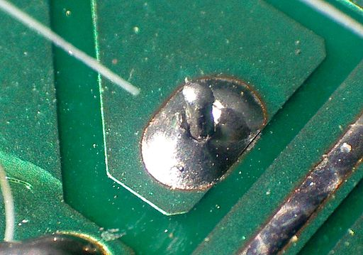
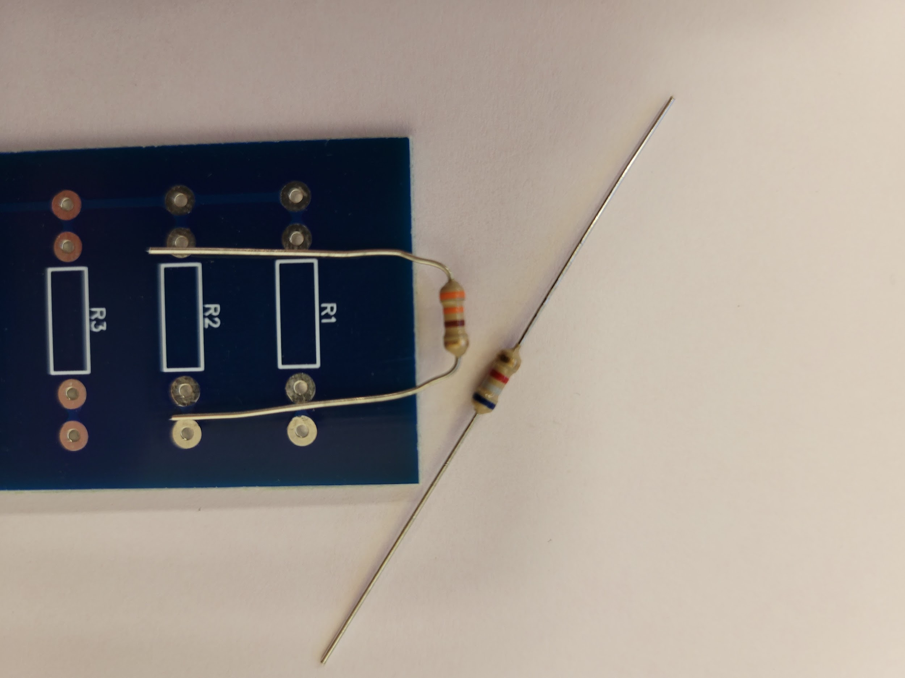
Step 2: Bend the leads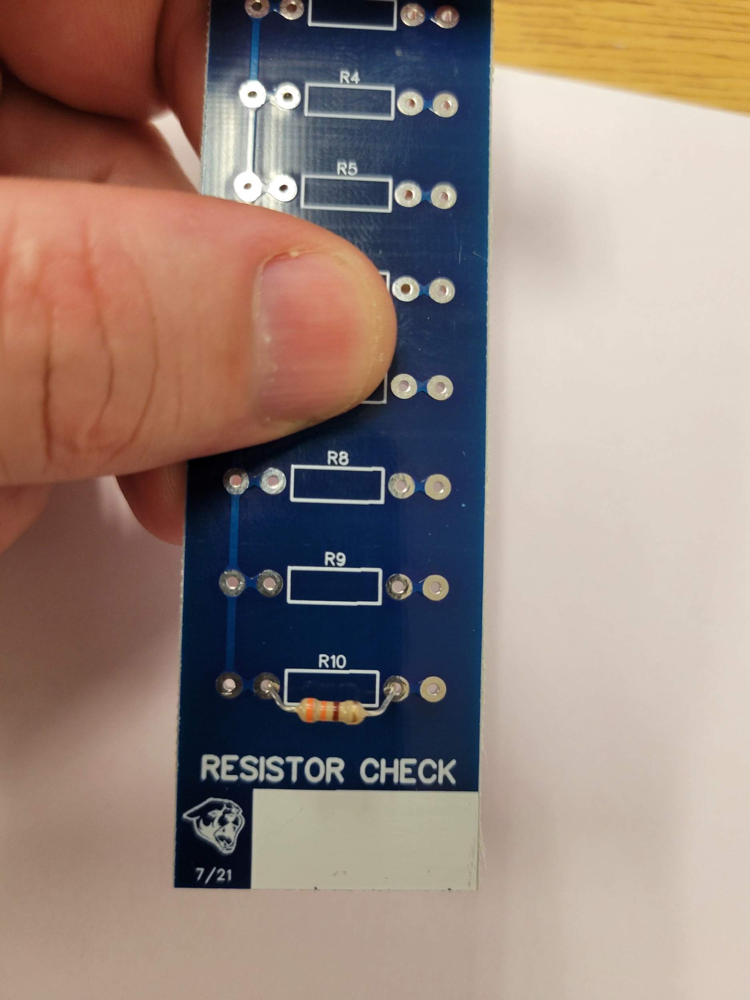
Step 3: Place on top side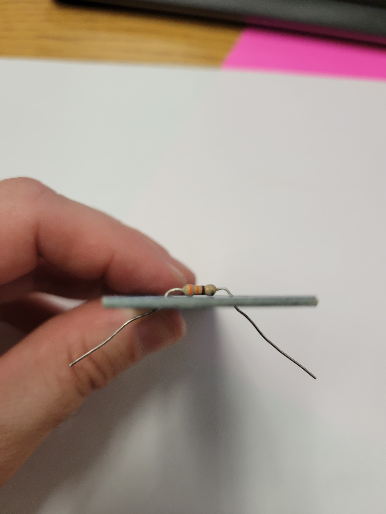
Step 4: Pull leads outward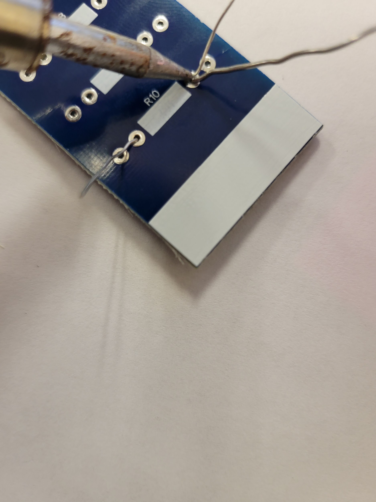
Step 5: Soldering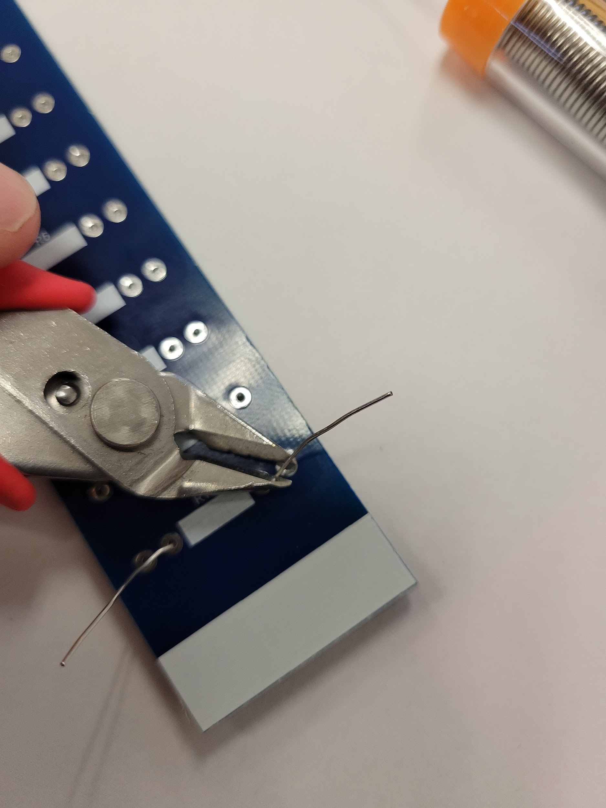
Step 6: Trimming leads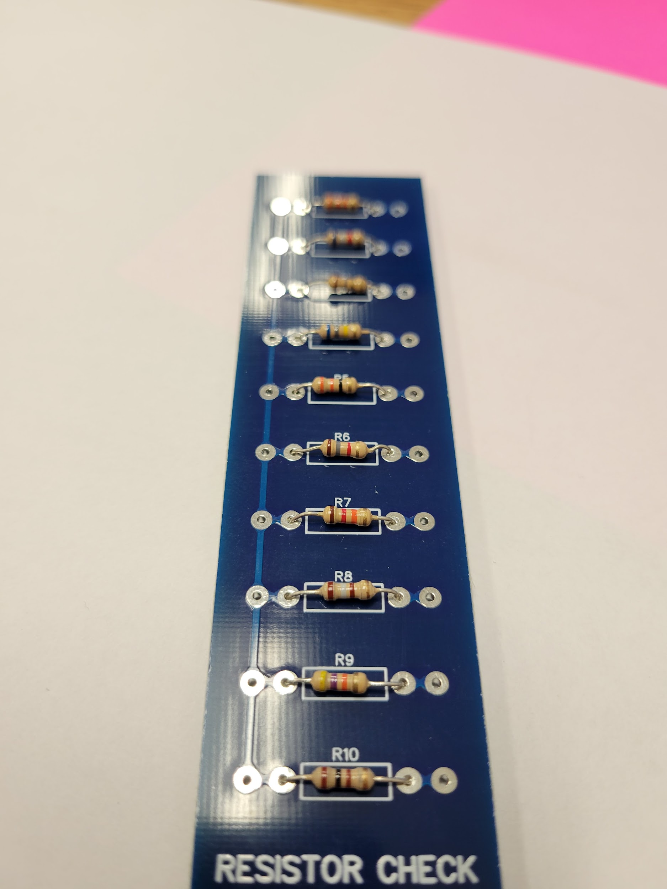
Step 7: All 10 mounted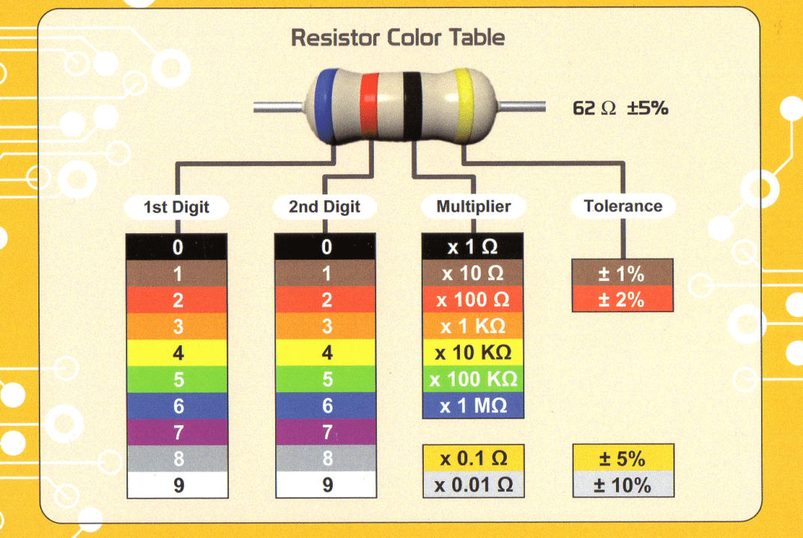
// Always set the range ABOVE the expected value first, then work down if needed.
| Resistor | Nominal Value | Measured Value |
|---|---|---|
| R1 | _______ Ω | _______ Ω |
| R2 | _______ Ω | _______ Ω |
| R3 | _______ Ω | _______ Ω |
| R4 | _______ Ω | _______ Ω |
| R5 | _______ Ω | _______ Ω |
| R6 | _______ Ω | _______ Ω |
| R7 | _______ Ω | _______ Ω |
| R8 | _______ Ω | _______ Ω |
| R9 | _______ Ω | _______ Ω |
| R10 | _______ Ω | _______ Ω |